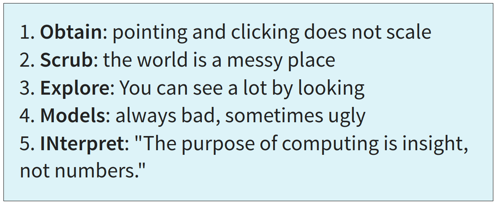
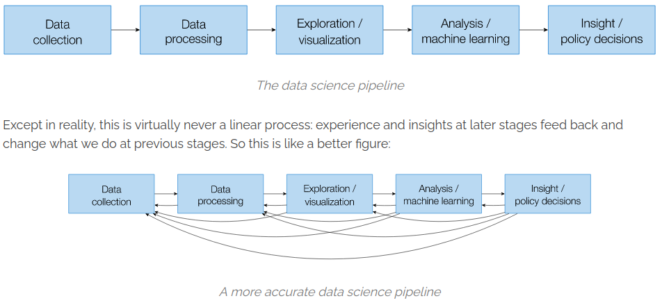
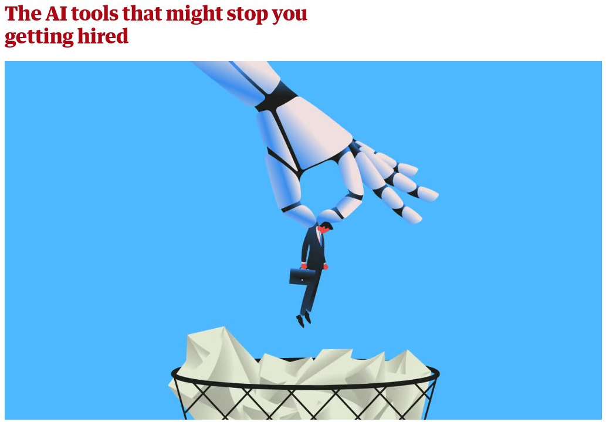

Introduction
What is Data Science?
"In fact, some data scientists are — for all practical purposes — statisticians, while others are pretty much indistinguishable from software engineers. Some are machine-learning experts, while others couldn't machine-learn their way out of kindergarten...
In short, pretty much no matter how you define data science, you'll find practitioners for whom the definition is totally, absolutely wrong."
— Joel Grus, Data Science from Scratch, p. 20
Fayyad et al (1996). The KDD Process for Extracting Useful Knowledge from Volumes of Data
(Knowledge Discovery in Databases)
Chapman et al (1999), Wirth (2000). "Towards a standard process model for data mining".
2. Scrub: the world is a messy place
3. Explore: You can see a lot by looking
4. Models: always bad, sometimes ugly
5. INterpret: "The purpose of computing is insight, not numbers."
Mason and Wiggins (2010). "A Taxonomy of Data Science".
Schutt and O'Neil (2014). "Doing Data Science: Straight talk from the frontline".
GAIMME Guidelines for assessment & instruction in mathematical modeling education (2016).
Guidelines for Assessment and Instruction in Statistics Education (GAISE) Reports
(2020, based on 2007).
Zico Kolter (2021). Practical Data Science, Intrdouction
Many frameworks. Much overlap.
|  | ||
|  |
|
Data
|
1. Get the data
|
|
Preprocess
|
2. Clean up the data
|
|
Explore
|
3. Explore the data
|
|
Model
|
4. Model it
|
|
Communicate
|
5. Share the results
|
Data Modeling Process
Data Modeling Process
• Design
∘ Translate a problem into a data-problem.
∘ Survey or experimental design
∘ Database infrastructure
• Acquire
∘ Survey or experiment
∘ Download the dataset! CSV, API, etc.
∘ Web scraping
Data Modeling Process
• Wrangle
∘ Format
∘ Clean and organize
∘ Check data integrity
• Prepare
∘ Label
∘ Split into training and testing sets
∘ Normalize
Data Modeling Process
• Visualize
∘ Plot and familiarize with data
∘ Look for and compare features visually
∘ Consider appropriate models
• Inspect
∘ Exploratory data analysis
∘ Descriptive statistics
∘ Identify features analytically
Data Modeling Process
• Model
∘ Try and compare multiple models
∘ Consider bias and variance
∘ Interpret model and performance
• Validate
∘ Assess model performance on independent test data
∘ Error analysis and stress-test
∘ Consider consequences
Data Modeling Process
• Reflect
∘ Consider contexts, bias, and consequence
∘ Create audit plant
∘ Document - data and model
• Share
∘ Report documentation
∘ Inform policy
∘ Deploy in product
Data Modeling Process
Data Modeling Process
Environment
A framework for critical analysis
|
Data
|
• Harmful data collection, lack of consent, insecure / lack of privacy, historical,
representational, or measurement bias, ...
|
|
Preprocess
|
• Labor exploitation, labeling by non-experts, incorrect labeling, trauma
experienced by labelers, ...
|
|
Explore
|
• Feature selection bias, bias in interpretation of data visualization, data
manipulation, feature hacking, ...
|
|
Model
|
• Bias in model choice, model-amplified bias, environmental impact, learning bias,
evaluation bias, peripheral modeling, ...
|
|
Communicate
|
• Biased model interpretation, ignoring variance, rejecting model, deploying
harmful products, deployment bias, ...
|
|
Meta
|
• "Pernicious feedback loops", runaway
homogeneity, susceptability to adversarial
attack, lack of oversight or auditing, ...
|
|
|


the next generation of pseudoscientists?
A common misconception is that
data + compute ⟶ solutions
If the problem isn't solved yet, it's just because you haven't added enough technology yet!
This is one facet of Technosolutionism
|  |
"Not only do many of the hiring tools not work, they are based on troubling pseudoscience and can discriminate" |
- Honest interview in English: 83%
- Reading a random wikipedia page in German: 73%
- Getting a robot voice to read her English: 79%
"Our success, happiness, and wellbeing are never fully of our own making. Others' decisions can profoundly affect the course of our lives...
Arbitrary, inconsistent, or faulty decision-making thus raises serious concerns..."
- Fairness and Machine Learning, Barocas, Hardt, and Narayanan

"The hype is a lie"
- Tesla faked self-driving AI demo
- Google faked Duplex AI demo
- Google faked Gemini AI demo
- Google Deep Mind claims to discover 2.2 million compounds
- Amazon Fresh "walk out" turns out to be 1000 people in India
- Facebook chatbot M powered largely by humans
- Microsoft covered up vulnerabilities in DALL-E 3 image generator
- Rabbit R1 turns out to just be an Android app
- Humane AI Pin edited video to fix incorrect answers
- OpenAI reported 90th-percentile performance on Bar Exam.

and that's what this course is about.